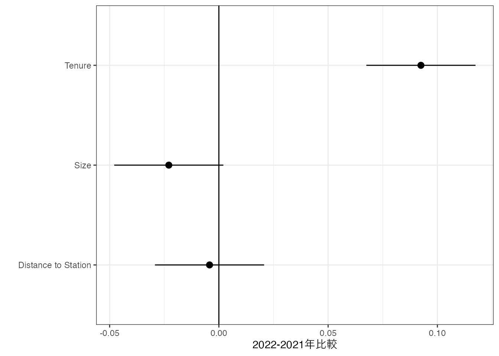
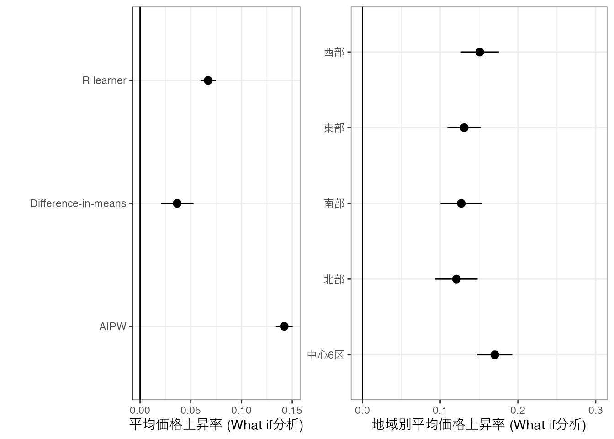

| Price | Size | Tenure | StationDistance | District |
|---|---|---|---|---|
| 4.41 | 70 | 9 | 4 | 台東区 |
| 3.53 | 25 | 11 | 3 | 世田谷区 |
| 2.64 | 30 | 37 | 13 | 江戸川区 |
| 4.09 | 55 | 30 | 7 | 中央区 |
| 3.09 | 25 | 22 | 4 | 中央区 |
| 4.87 | 65 | 16 | 4 | 港区 |
| 3.56 | 35 | 10 | 4 | 台東区 |
| 2.30 | 20 | 35 | 4 | 新宿区 |
| 4.08 | 65 | 17 | 7 | 台東区 |
| 3.00 | 15 | 24 | 8 | 新宿区 |
1 分析例
ここでは本ノートで紹介する推定法を用いた、推定結果の例を示します。
1.1 データ
本ノートにおいてデータ分析法は、「事例から学ぶ方法」として位置付けます。 事例とは、過去の経験や出来事、歴史などであり、その蓄積をデータと呼びます。 例えば以下は、2021年と2022年の第二四半期の東京23区における中古マンション取引事例1をデータ化しています。
以上のような取引事例が 24645 個収録されています。 このようなデータを用いて、以下のような意思決定問題に役立つ情報提供のあり方を、ラフに論じます。
1.2 分析工程
以上のようなデータを活用するためには、まず分析工程を設定することが重要です。 本ノートが、想定する分析工程の大枠は以下です。
1.2.1 意思決定問題の設定
データ分析を始めるための最初のステップは、分析結果をどのような意思決定問題に活用するのか、明確なイメージを持つことです2。 活用方法に応じて、適した分析のゴール、ひいては分析方法も異なってきます。
Agrawal, Gans, and Goldfarb (2018) は意思決定問題を、「予測と判断(Judgement)」に分解しています。 そして機械学習は予測の改善に役を立ち、人間により行われる判断を補完すると主張してます。 本ノートでは、機械学習や統計学、計量経済学の手法は、狭義の予測のみならず、広義の現状把握に役立つを強調します。 一般に意思決定において、社会や市場の状況について、包括的な状況把握が必要となります。 そして社会や市場の全てのを直接観察することはできず、過去の経験や事例から類推するしかありません。
上記データと関連する例として、中古マンション販売業者による中古マンションの査定金額算出や、支店網や営業戦略の再編(どの地域に注力すべきか)に有益な分析結果を提供できる可能性があります。
次にその意思決定問題に有益な情報を明確にすることで、分析のゴールを設定します。 ここでは大きく予測を目的とする研究と集団の特徴把握を目標とする研究に大別し論じます。 次にそれぞれのゴールに適した手法を用いた推定を行い、分析結果を得ます。 ここでは予測を目標とする研究であれば教師付き学習の手法、把握を目標とするのであれば伝統的な手法、より複雑な特徴を把握したいのであればそのハイブリット的な方法に比較優位があることを論じます。
1.2.2 分析目標
応用を想定する意思決定問題と活用できるデータに応じて、分析目標を適切に設定する必要があります。 ここで本ノートでは、分析目標は大きく、「各事例に応じた予測」、または「事例全体の特徴把握」に大別することに注意してください。 この分類は、機械学習や傾向スコア、Balancing weightsなど、年々多様化する分析手法を整理する前提となります。 以下、これらの分析目標と結果、および意思決定問題の例を、具体的な分析例とともに紹介します。
1.3 分析例: 取引価格予測
土地や中古マンション等の取引においては、これら資産の市場価格の算出が重要な役割を持ちます。 しかしながら不動産は、他の商品や資産と比べても、多くの属性（広さや立地、築年数等）をもち、市場価格の算出は困難です。
Chapter 3 で紹介する手法は、中古マンションの属性から、市場での取引価格を予測するモデル(予測モデル)の推定を目指しています。 このようなデータ主導の予測は、実際の不動産価値の鑑定に応用されています3。
具体例として、以下の8事例について、中古マンションの取引価格を予測します。
| Size | StationDistance | Tenure | District |
|---|---|---|---|
| 35 | 8 | 8 | 品川区 |
| 95 | 8 | 16 | 豊島区 |
| 25 | 8 | 7 | 北区 |
| 60 | 8 | 23 | 台東区 |
| 50 | 2 | 18 | 中央区 |
| 75 | 10 | 16 | 江東区 |
東京２３区内の中古マンションの取引データから、\(X=\{\)取引された物件の築年数 (Tenure)、 部屋の広さ (Size)、駅からの距離 (Distance to Station)、立地 (District) \(\}\) から予測するモデルを推定し、予測値を実際に算出してみました。 予測モデルは、LASSO/OLS/RandomForestのStacking法で推定しています。
| Prediction | Size | StationDistance | Tenure | District |
|---|---|---|---|---|
| 81.78570 | 70 | 4 | 9 | 台東区 |
| 29.12521 | 25 | 3 | 11 | 世田谷区 |
| 13.77940 | 30 | 13 | 37 | 江戸川区 |
| 54.77992 | 55 | 7 | 30 | 中央区 |
| 26.25486 | 25 | 4 | 22 | 中央区 |
| 107.00030 | 65 | 4 | 16 | 港区 |
| 36.45620 | 35 | 4 | 10 | 台東区 |
| 15.34824 | 20 | 4 | 35 | 新宿区 |
港区、築10年、65平米、駅から４分の物件が、最も高い取引価格(1億700万円)が予測されました。 対して、江戸川区、築37年、30平米、駅から13分の物件については、予測取引価格は1378万円であり、大きな格差が予測されました。
以上のような分析の前提は、予測対象 (中古マンション) について、大量の事例が利用できることです。 もしこのようなデータが活用できるのであれば、事例ごとにきめ細かい予測を提供することができます。 機械学習の活用すれば、多くの属性を用いた複雑な予測モデルも容易に推定できます(Chapter 3)。
以上ような前提が満たされやすい意思決定問題は、決定が影響を与える範囲が狭いミクロな意思決定であることが多いと考えらます。 例えば不動産取引の直接的な影響は、当該取引に関わる売手と買い手に限定されます。 このため目の前の物件についての予測が重要であり、このような物件についての取引事例については膨大な蓄積があります。
対して幅広い層が影響を受けるマクロな意思決定においては、事例ごとの予測の活用は困難です。 不動産会社が、どのような地域に経営資源を投入するのか、を決定する差には、地域の不動産市場の動向把握が重要であると考えられます。 この場合、各地域には膨大な数の物件が存在しており、仮に事例ごとに詳細な予測値が提供できたとしても、大量の予測値を人間が定式に認識し活用することは極めて困難です。 このような場合、事例の集計値を推定し、活用することが必要となります。
1.4 分析例: 取引価格の比較
2022年と2021年の東京23区内の中古マンション市場を比較しました。
2022-2021年比較: \(\{\) Tenure, Size, Distance to Station \(\}\)の差を95\(\%\) 信頼区間 (Bonferoni法による修正済み)を表示
バランス前-後平均取引価格上昇率: 取引価格の対数値について、2022年と2021年の単純平均差 (Difference-in-means) および、「\(\{\)取引された物件の築年数 (Tenure)、 部屋の広さ (Size)、駅からの距離 (Distance to Station) \(\}\) の分布が変化しなかった」という仮想シナリオのもとでの取引価格の平均差 (What if 分析) を信頼区間とともに表示
5区 (中心6区: \(\{\)中央/千代田/港/新宿/渋谷/本郷\(\}\)、 北部: \(\{\)北/板橋/豊島\(\}\) 、南部: \(\{\)品川/目黒/大田 \(\}\) 、西部: \(\{\)世田谷/中野/杉並/練馬 \(\}\) 、 東部: \(\{\) 台東/墨田/江東/葛飾/江戸川 \(\}\))、 別の平均取引価格の上昇率 (物件の特徴はバランス済み)

1.5 分析例: 取引価格の比較
2022年と2021年の東京23区内の中古マンション市場を比較しました。
2022-2021年比較: \(\{\) Tenure, Size, Distance to Station \(\}\)の差を95\(\%\) 信頼区間 (Bonferoni法による修正済み)を表示
バランス前-後平均取引価格上昇率: 取引価格の対数値について、2022年と2021年の単純平均差 (Difference-in-means) および、「\(\{\)取引された物件の築年数 (Tenure)、 部屋の広さ (Size)、駅からの距離 (Distance to Station) \(\}\) の分布が変化しなかった」という仮想シナリオのもとでの取引価格の平均差 (What if 分析) を信頼区間とともに表示
5区 (中心6区: \(\{\)中央/千代田/港/新宿/渋谷/本郷\(\}\)、 北部: \(\{\)北/板橋/豊島\(\}\) 、南部: \(\{\)品川/目黒/大田 \(\}\) 、西部: \(\{\)世田谷/中野/杉並/練馬 \(\}\) 、 東部: \(\{\) 台東/墨田/江東/葛飾/江戸川 \(\}\))、 別の平均取引価格の上昇率 (物件の特徴はバランス済み)

1.6 意思決定
本ノートでは、何らかの意思決定問題の改善への活用を目指して行うデータ分析を想定します。 データ分析を始めるための最初のステップは、分析結果をどのような意思決定問題に活用するのか、明確なイメージを持つことです4。 活用方法に応じて、適した分析のゴール、ひいては分析方法も異なってきます。
Agrawal, Gans, and Goldfarb (2018) は意思決定問題を、「予測と判断(Judgement)」に分解しています。 そして機械学習は予測の改善に役を立ち、人間により行われる判断を補完すると主張してます。 本ノートでは、機械学習や統計学、計量経済学の手法は、狭義の予測のみならず、広義の現状把握に役立つを強調します。 一般に意思決定において、社会や市場の状況について、包括的な状況把握が必要となります。 そして社会や市場の全てのを直接観察することはできず、過去の経験や事例から類推するしかありません。 具体例として、二つの意思決定問題を考え、これらの意思決定を支援するために、 ?fig-data のデータの活用を目指すとします。 便宜上、一番目の意思決定をミクロな意思決定、二番目をマクロな意思決定と呼びます。
(ミクロな意思決定) 中古マンションの買取: 不動産業者が、ある中古マンションを適正価格で買取を行おうとしている。この際にこの物件の市場価格を参照したいが、分からない。
(マクロな意思決定) 支店網の見直し: 大規模な不動産会社が、都内の支店網の見直し計画を策定しようとしている。この際に、足元の不動産市場の状況を参照したいが、分からない。
本ノートにおいて、ミクロな意思決定は限られた範囲にのみ影響を与えるような意思決定を指します。 例えば、ある物件の買取が、他の物件に与える直接的な影響は限定的かもしれません。 一般に機械学習を用いた予測モデルの優れた実践例は、ミクロな意思決定の支援、あるいは自動化が多いです。 例えば、迷惑メールの自動分類が古典的な例となります。 このように影響を与える事例数が限られており、事例に合わせた意思決定が要求される場合、事例ごとに予測値を算出することには、大きな意義があります。
ミクロな意思決定については、予測値 ?fig-prediction は有益なものになるかもしれません。 予測性能が良ければ、買取査定において重要となる現状での市場価格を物件(事例)ごと に算出できます。
対してマクロな意思決定は、幅広く影響を与えるような意思決定を指します。 政府による政策決定や企業の戦略決定、あるいは有権者による投票行動などが含まれます。 これらの意思決定は、影響を受ける利害関係者が多く、より複雑な判断を求められます。 この判断を支えるためには、影響を受ける事例群について、多角的な現状把握や決定の影響を予測する必要があります。
個々の事例把握は困難であり、事例群全体の特徴を把握する方が現実的です。 影響を与える事例数が膨大なものとなる場合、マクロな意思決定については、予測値そのものの持つ意義は限定的です。 大量の予測値を一度に見せられても、人間が処理しきれず、判断に活用できないためです。 大量の取引物件(事例)の特徴 を、人間が把握するためには、より情報を要約する必要があり、 ?fig-description のような把握を目的とした結果が比較優位を有するかもしれません。 このような場合は、伝統的な推定方法、あるいは機械学習とのハイブリット的な方法が比較優位を持つと考えられます。
1.7 Reference
Agrawal, Ajay, Joshua Gans, and Avi Goldfarb. 2018. Prediction Machines: The Simple Economics of Artificial Intelligence. Harvard Business Press.
———. 2022. Power and Prediction: The Disruptive Economics of Artificial Intelligence. Harvard Business Press.
国土交通省のレポジトリ (https://www.reinfolib.mlit.go.jp/) からダウンロードできます。↩︎
Agrawal, Gans, and Goldfarb (2018), Agrawal, Gans, and Goldfarb (2022)↩︎
例えば国土交通省から平成31年に公表された 「先進的な技術の活用等により 多様化するニーズへ対応するための 不動産鑑定評価手法の在り方に関する検討業務」(https://www.mlit.go.jp/common/001285650.pdf) においては、不動産鑑定業務における有望な先進技術(12 ページ)として、「従来の基礎統計量の表示や重回帰分析等に基づく統計解析結果の出力はもちろん、ニューラルネットワークや決定木、主成分分析、クラスタリング、サポートベクトルマシンなど、より幅広い分析技術を身につけることにより、より丁寧な分析や詳細な説明を行うことができるようになると考えられる」と記載されている。↩︎
Agrawal, Gans, and Goldfarb (2018), Agrawal, Gans, and Goldfarb (2022)↩︎